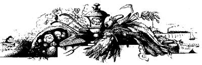

ISSUE NO. 34 - JULY/AUGUST 1975
Seed production is a science in its own right, and a complete study of the subject would take many volumes. This article is meant to be only a very basic guide for the beginner who wants organically grown seeds-free of any chemical-and who enjoys new challenges in gardening.
Saving the seeds of garden vegetables really isn't too difficult if you observe a few basic rules:
[1] Plan your garden with seed collecting in mind which means, for one thing, that the original plants must be standard varieties, and not crosses. This is because seeds produced by hybrids give very unreliable results: The offspring may revert back to either parent or even turn out to be something quite unexpected!
[2] Many closely related plants can cross if they're grown near one another (how near depends on the method of pollination for the particular species). Thus, if seeds are to be saved from the yield of a small plot, only one variety each of most vegetables should be raised. A larger area allows more freedom to diversify provided you understand the mechanics of fertilization in whatever crops you're growing, and arrange your plantings accordingly.
Some plants, for example, are wind-pollinated, and cross readily as their fertilizing dust drifts on the breeze from flower to flower. Variants of such a species must therefore be widely separated (or screened from one another by several rows of corn or a similar tall crop).
Other garden favorites are pollinated by insects and had better be grown in single varieties on the average homestead, since you can't control the movements of the small flying "helpers". (Commercial seed producers separate different varieties of such Vegetables by at least a quarter mile and often much more. MOTHER.)
The greatest scope for diversity in your seed-saving program is among self-pollinating plants (those that have both pollen producing anthers and pollen-receiving stigma enclosed in the same flower). Accidental crossing is rare with these species and close relations can be grown in a modest-sized plot with little risk of mixing the strains.
[3] Remember to collect seed only from individual plants that show the best characteristics of their kind. Don't just settle for the first ripe specimen in a particular row! Careful selection of the finest, most vigorous stock may result-over a period of time-in a special sub-variety that's particularly well suited to your area or soil.
Before going any further with this article, of course, it's only fair to warn you that most authorities on horticulture don't recommend the saving of seeds from the home vegetable patch and it's true that your harvest's offspring won't be as uniform and predictable as those obtained from a commercial grower (who operates under controlled conditions). Nevertheless, this is a fascinating project, a real money saver at current prices, and a good alternative for the organic gardener who wants to be sure his future plants are free of chemicals.
If you can accept an occasional disappointment as part of the game, then, by all means try your hand at seed gathering. The following pointers on specific vegetables may help you get started. (Please note: The figures on viability are approximate, and are included as rough indications of maximum keeping time for seeds under good conditions. See MOTHER NO. 31 for advice on seed storage.)
BEANS (viability, 3 years)
POLLINATION: Beans are self-pollinated, and, although crosses do occur occasionally, such events are rare. More than one variety can therefore be grown with little separation.
COLLECTION OF SEEDS: Simply select the best plants of the variety you desire, and tag them to be left untouched when the rest of the crop is harvested. After the pods are fully mature and dry, shell out the seeds and save them for the following season.
BEETS (viability, 6 years)
POLLINATION: Beet pollen is carried by the wind and, since the plant crosses easily, it's desirable to grow just one variety.
COLLECTION OF SEEDS: Beets are biennials and require two years to develop fully. Keep roots from the first season in cool storage through the winter and transplant them into the garden come spring. Let the plants grow to maturity, remove the tops to dry indoors, shake out the seeds later, and store them for the following year.
CABBAGE FAMILY (viability, 5 years)
POLLINATION: Cabbage, kale, brussels sprouts, kohlrabi, broccoli, and cauliflower all belong to the same species, are pollinated by insects, and will cross with one another. Seed production in the home garden is feasible only if a single member of the family is grown.
COLLECTION OF SEEDS: Cabbage and its relatives are biennials-like beets-and bear seeds in the second year. The firmestheaded specimens produced during the first season are carefully stored through the winter and set out the following spring. Seed stalks must be supported to avoid breakage, picked when mature, and hung indoors to dry. The seeds can then be removed and packed.
CARROTS (viability, 4 to 5 years)
POLLINATION: Since carrots are pollinated by insects, only one variety should be raised at a time. Watch out, too, for the fact that wild carrots-Queen Anne's lace-will cross with your domestic crop.
COLLECTION OF SEEDS: The carrot, too, is a biennial. Keep the best first-year roots in cool storage through the winter and set them out in the spring, 10 to 12 inches apret !. When the tops have matured, cut them, dry them, and shake out the seeds.
CORN (viability, 2 years)
POLLINATION: Corn is fertilized by wind-borne pollen and is planted in blocks at least three rows wide to facilitate the process. If you intend to save seed, be sure to use a standard or "open-pollinated" variety (the various hybrids are infertile).
COLLECTION OF SEEDS: Select the earliest and best ears and let them ripen on the stalk. Then strip back the husks and hang the full cobs in a dry place. When the kernels have thoroughly dried, shell them out and store them for future planting.
CUCUMBERS, CANTALOUPES, AND WATERMELONS (viability, 5 years)
POLLINATION: The above vine crops belong to different species and won't cross with one another. All are insect pollinated, however, so only one variety of each plant should be grown if you intend to save seeds.
COLLECTION OF SEEDS: Select the earliest-maturing fruit of the desired variety and leave it to become fully ripe. Then mash the flesh with water and let the mixture stand for several days after which the pulp and liquid can be poured off and the seeds dried on a flat surface.
LETTUCE (viability, 5 years)
POLLINATION: Because lettuce bears a self-fertilizing blossom, there's very little problem with cross-pollination among varieties.
COLLECTION OF SEED: Grow the plants in the usual manner and select the best specimens (lateness in going to seed is a desirable quality). If your choices seem unwilling to ripen, split the heads with a knife. The tall tops should be staked so they don't fall over. When the seeds have developed, shake them into a container.
ONIONS (viability, 2 years)
POLLINATION: Onion pollen is insect borne, and isolation of varieties is necessary to keep the strains pure.
COLLECTION OF SEEDS: Onions are biennial. Save large, fully developed bulbs through the winter and set them out the following spring. Support the tall blossom stalks and harvest the seeds when they mature.
PEAS (viability, 3 years)
See BEANS.
PUMPKINS, SQUASH (viability, 4 years)
POLLINATION: Pumpkins and squash are pollinated by insects, and many crosses are possible. (According to Seeds, the USDA Yearbook of Agriculture for 1961: "Varieties of squashes and pumpkins belong to four botanical species of the genus Cucurbita Crosses may occur among some of them. The need for isolation therefore depends on the species to which a variety belongs-not on whether it is a 'squash' or a 'pumpkin'. " A diagram of these relationships appears on page 211 of the yearbook.-MOTHER.)
For home gardening purposes, it's simplest to grow only one member of this group if seed of a pure strain is wanted. (The various crosses, however, are perfectly edible and provide a fascinating study in diversity.-MOTHER.)
COLLECTION OF SEEDS: The seeds of mature fruit are removed from the cavity, washed thoroughly, and spread on a flat surface to dry.
RADISHES (viability, 5 years)
POLLINATION: Only one variety of radish should be grown to prevent cross-pollination by insects.
COLLECTION OF SEEDS: Choose the largest, earliest specimens as seed-producers, and stake the stalks to avoid breakage. When the seed is mature, cut the stem, let the pods dry, and shell out the contents.
SPINACH (Viability, 5 years)
POLLINATION: Spinach pollen is very fine and is carried by the wind over long distances. Varieties will cross if more than one is grown in a family garden.
COLLECTION OF SEEDS: The plant to save is the last one that ripens. Cut the seed stalks after they reach full maturity, let them dry, and hull out the seeds.
TOMATOES (viability, 4 years)
POLLINATION: Tomatoes are primarily a self-fertilizing fruit. Therefore cross-pollination isn't much of a problem and varieties will probably remain distinct even if several are grown in the same garden.
COLLECTION OF SEEDS: Pick very ripe, well-formed fruit of the desired variety. Mash these tomatoes thoroughly in a container, fill the vessel with water, and let the mixture stand for a couple of days. The pulp will float to the top and can be poured off with the liquid, leaving the seeds on the bottom. Wash them thoroughly and spread to dry on a flat surface.
TURNIPS (viability, 5 years)
POLLINATION: Turnips are insect pollinated, and only one variety should be grown.
COLLECTION OF SEEDS: See BEETS.
|
 |
|
|